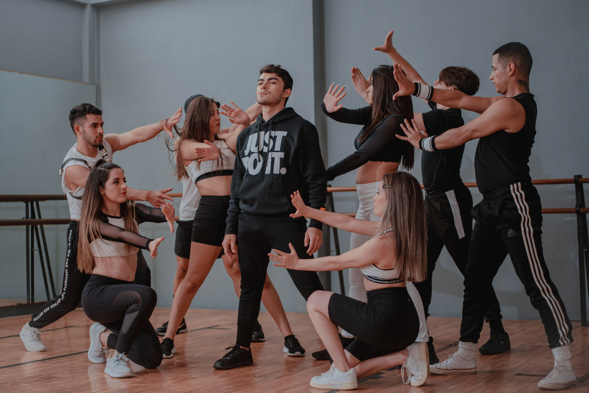

Nos Activités

Zumba
Un cocktail énergique de danse et de fitness sur des rythmes latinos ! Accessible à tous, la Zumba allie cardio, coordination et bonne humeur.
- Professeur : Léa Fernandez
- Capacité : 25 personnes
- Places disponibles : 6
- Jour : Lundi et jeudi à 18h

Strong Nation
Une activité qui combine mouvements synchronisés sur la musique et exercices de renforcement musculaire. Idéal pour dépasser ses limites en rythme !
- Professeur : Malik Diao
- Capacité : 20 personnes
- Places disponibles : 3
- Jour : Mardi à 19h

Hip-Hop Cardio
Une fusion entre danse urbaine et cardio-training. Parfait pour s’exprimer, se défouler et bouger avec style.
- Professeur : Chloé Morel
- Capacité : 30 personnes
- Places disponibles : 12
- Jour : Mercredi à 17h30

Stretching & Mobilité
Des séances douces pour étirer les muscles, améliorer la posture, prévenir les blessures et relâcher les tensions accumulées.
- Professeur : Nadia Krief
- Capacité : 15 personnes
- Places disponibles : 5
- Jour : Vendredi à 10h

Danse Libre Créative
Un atelier pour explorer sa propre gestuelle, improviser en groupe et se reconnecter à son corps par l’émotion et le mouvement.
- Professeur : Jules Navarro
- Capacité : 20 personnes
- Places disponibles : 2
- Jour : Dimanche à 11h